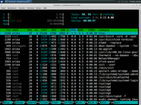

htop
Dieser Artikel wurde für die folgenden Ubuntu-Versionen getestet:
Dieser Artikel ist größtenteils für alle Ubuntu-Versionen gültig.
Zum Verständnis dieses Artikels sind folgende Seiten hilfreich:

|  |
| htop in Aktion |
htop  zeigt eine dynamische Übersicht der laufenden Prozesse (siehe auch ps) sowie der belegten Systemressourcen an. Gegenüber dem Klassiker top bietet dieser Prozessmanager jedoch einige Komfortfunktionen.
zeigt eine dynamische Übersicht der laufenden Prozesse (siehe auch ps) sowie der belegten Systemressourcen an. Gegenüber dem Klassiker top bietet dieser Prozessmanager jedoch einige Komfortfunktionen.
So hat das Programm eine ncurses-Oberfläche und kann einfach mit der Tastatur bedient werden, ohne lange Befehle eintippen zu müssen. Wird htop in einem Terminal innerhalb einer Desktopumgebung gestartet, kann auch die Maus benutzt werden. Möchte man die Maus in einem virtuellen Terminal nutzen, muss GPM installiert werden.
Außerdem bietet das Programm eine frei konfigurierbare Leiste im oberen Teil der Anzeige. Dort können Graphen für die Systemressourcen und verschiedene, weitere Informationen ausgegeben werden.
Installation¶
Folgendes Paket muss installiert werden [1]:
htop (universe)
 mit apturl
mit apturl
Paketliste zum Kopieren:
sudo apt-get install htop
sudo aptitude install htop
Verwendung¶
Kurze Syntaxbeschreibung für die Verwendung auf der Kommandozeile [2]:
htop [OPTION]
Beispiel:
htop -u fred
Mit diesem Aufruf werden nur Prozesse des Benutzers fred angezeigt.
Zum Beenden Q , F10 oder Strg + C drücken.
Hinweis:
Der Entwickler weist darauf hin, dass in htop im Unterschied zu vergleichbaren Prozessmanagern alle einzelnen Threads eines Prozesses anzeigt werden. In der Baumansicht lässt sich das gut überblicken. Allerdings wird zu jedem Thread der gesamte Speicherverbrauch des Elternprozesses angegeben und nicht nur für den jeweiligen Thread. Im "Setup" F2 kann die Auflistung aller Threads ganz deaktiviert oder so konfiguriert werden, dass sie farbig zusammengefasst werden.
Optionen¶
| Parameter | |
| Parameter | Funktion |
-d --delay=AKTUALISIERUNGSRATE | Aktualisierungsrate in 1/10 Sekunden angeben |
-C --no-color --no-colour | Ohne Farben starten |
-h --help | Kurzhilfe anzeigen |
-u --user=BENUTZERNAME | Nur Prozesse des angegebenen Benutzers anzeigen |
-s --sort-key SPALTENTYP | Nach einer bestimmten Spalte sortieren. Eine Liste der erlaubten Spaltennamen kann mit "htop -s help" ausgegeben werden. |
-v --version | Version anzeigen |
Tastenkombinationen¶
| Taste(n) | Funktion |
| ← , ↑ , → , ↓ | In Prozessliste blättern |
| ⇧ + U | Alle Tags entfernen |
| . , , | Inkrementelle Suche nach der PID |
| A | CPU-Affinität wählen |
| F1 , ? , H | Hilfe anzeigen |
| U | Prozesse eines Benutzers anzeigen |
| F2 , ⇧ + S | Setup öffnen und Einstellungen zu ändern |
| ⇧ + H | Zeigen/Verstecken von Userland-Threads |
| F3 , ⇧ + / | Inkrementelle Prozessnamensuche |
| ⇧ + K | Zeigen/Verstecken von Kernel-Threads |
| F4 , \ | Nach Namen filtern |
| ⇧ + F | Cursor einem Prozess anheften |
| F5 , T | Baumansicht de-/aktivieren |
| + , - | Baum aus-/einklappen |
| F6 , > | Spalte zum Sortieren wählen |
| ⇧ + P | Prozesse nach CPU-Auslastung sortieren |
| F7 | Nice-Wert verringern |
| ⇧ + M | Prozesse nach Arbeitsspeicherbenutzung sortieren |
| F8 | Nice-Wert erhöhen |
| ⇧ + T | Prozesse nach Zeit sortieren |
| F9 , K | Prozess oder Prozesse eines Tags beenden |
| L | Geöffnete Dateien mit lsof öffnen |
| F10 , Q , Strg + C | Beenden |
| S | Systemaufrufe mit strace verfolgen |
| Prozess taggen | |
| ⇧ + L | Bibliothekenaufrufe mit ltrace verfolgen |
| I | I/O-Steuerung (ab Version 1.0.2) |
Links¶
Glances - Systemmonitor mit Echtzeit-Statistiken
Shell/Befehlsübersicht
 Übersicht über verschiedene Shell-Befehle
Übersicht über verschiedene Shell-Befehle
- Erstellt mit Inyoka
-
 2004 – 2017 ubuntuusers.de • Einige Rechte vorbehalten
2004 – 2017 ubuntuusers.de • Einige Rechte vorbehalten
Lizenz • Kontakt • Datenschutz • Impressum • Serverstatus -
Serverhousing gespendet von